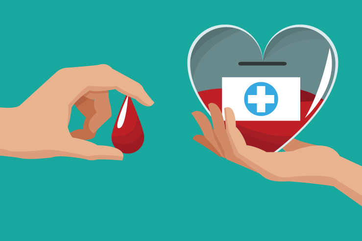
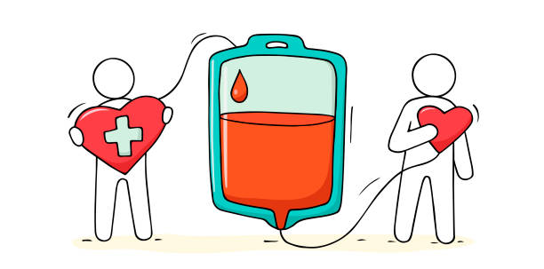
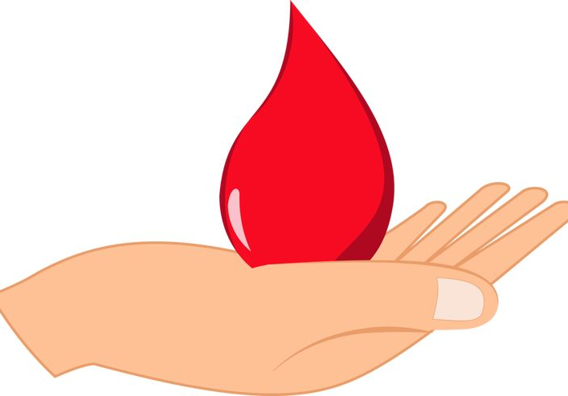

Капка живот
Всеки здрав човек на възраст от 18 до 65 години, който тежи повече от 50 кг., не е приемал никакви медикаменти последните 48 часа и за когото лекар прецени, че кръводаряването не застрашава здравето му и дарената от него кръв е безопасна за болните, нуждаещи се от нея, може да стане дарител. Мъжете могат да даряват кръв 5 пъти в рамките на една календарна година, а жените – 4 пъти, като интервалът между две кръводарявания трябва да бъде минимум 2 месеца.

Два-три дни преди акта на кръводаряване човек трябва да се храни редовно и разнообразно – това заздравява силите на организма и повишава качеството на кръвта. Кръводаряването не трябва да се извършва на гладно. Кръводарителят трябва да е сигурен, че е здрав и отпочинал. След кръводаряването се приемат повече течности и калорични храни.
Описаната процедурата продължава около 40 минути.
Източник: Национален център по трансфузионна хематология
Количествено кръвта се възстановява за около едно денонощие, а качествено за 3-4 седмици.

Кръвта се използва за лечение при пациенти с остра кръвозагуба, причинени от травми, за лечение на тежки изгаряния, при планови и спешни хирургични и акушерски интервенции, при AB0 и Rh несъвместимост на майката и плода, за лечение на злокачествени заболявания, както и за поддържане живота на пациенти с различни вродени анемии и хемофилии.

Всяка помощ е нужна. Ако поради някаква причина не можеш да дариш кръв, а искаш да помогнеш, можеш да мотивираш свои приятели, познати, съученици или колеги, които да кръводарят. Можеш и да популяризираш информация, свързана с кръводарителски кампании.
